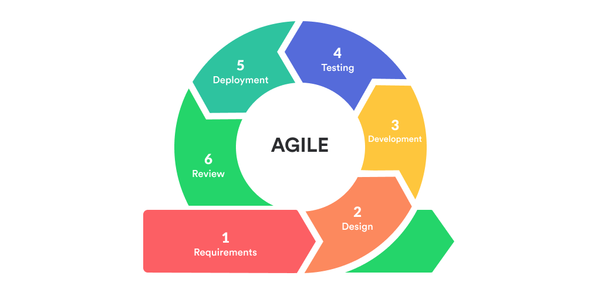

A.I: Shaping Global Dynamics
Marc Urbealis ~ February 14th, 2023.

Origins and Principles of Agile
Agile methodology traces its origins back to the Agile Manifesto, a revolutionary document crafted in 2001 by prominent software developers seeking an alternative to traditional, plan-driven development methodologies. The manifesto outlined four core values—individuals and interactions over processes and tools, working solutions over comprehensive documentation, customer collaboration over contract negotiation, and responding to change over following a plan. These values prioritize people and adaptability, setting the foundation for Agile's principles. The twelve accompanying principles further emphasize continuous delivery, welcoming changes, and maintaining a sustainable pace, guiding development teams towards flexibility and customer satisfaction.
Iterative Development and Sprints
Agile's iterative development model is a departure from the linear waterfall approach. Iterations, often referred to as sprints, are time-boxed periods where development occurs. This iterative process allows for continuous refinement and adaptation. Sprints typically last two to four weeks, fostering a cadence that encourages regular assessment, adaptation, and improvement. Unlike traditional methodologies where changes are cumbersome, Agile's iterative cycles provide the flexibility needed to respond to evolving requirements throughout the project, leading to a more responsive and dynamic development process.
Scrum and Kanban
Scrum, a widely adopted Agile framework, introduces specific roles, events, and artifacts that structure the development process. It establishes roles such as Scrum Master, responsible for facilitating the Scrum process, the Product Owner, accountable for defining and prioritizing the product backlog, and the Development Team, responsible for delivering potentially shippable increments. Scrum events include Sprint Planning, Daily Stand-ups, Sprint Review, and Sprint Retrospective, providing a structured framework for efficient development. In contrast, Kanban, another popular Agile framework, focuses on visualizing the workflow on a Kanban board, allowing teams to manage and optimize their processes continuously.
Customer Collaboration and Feedback
Agile's emphasis on customer collaboration is a core tenet that extends throughout the entire development process. Unlike traditional models where customer involvement is typically limited to the beginning and end of a project, Agile encourages continuous customer engagement. Techniques such as user stories, personas, and regular feedback sessions ensure that the development team has a deep understanding of user needs. This collaboration leads to the creation of products that not only meet but often exceed customer expectations, contributing to higher satisfaction rates.
Transparency and Communication
Transparency is a foundational principle in Agile, promoting open communication within the development team and stakeholders. Daily stand-up meetings, a brief and focused ritual, facilitate communication and quick issue resolution. Sprint reviews provide stakeholders with a tangible demonstration of progress, encouraging real-time feedback. Retrospectives at the end of each sprint allow teams to reflect on what went well and identify areas for improvement. This transparency fosters a culture of trust, collaboration, and continuous improvement, crucial elements for success in dynamic development environments.
Adaptability to Change
One of Agile's core strengths is its ability to adapt to changing requirements. The Agile Manifesto explicitly values responding to change over following a plan. This adaptability is operationalized through practices like backlog refinement and sprint planning meetings. The iterative nature of Agile development allows teams to reprioritize tasks, pivot strategies, and incorporate new insights, ensuring that the final product remains aligned with evolving needs. This flexibility is particularly valuable in industries where market conditions, technology landscapes, or customer preferences are subject to rapid shifts. Transparency is a foundational principle in Agile, promoting open communication within the development team and stakeholders. Daily stand-up meetings, a brief and focused ritual, facilitate communication and quick issue resolution. Sprint reviews provide stakeholders with a tangible demonstration of progress, encouraging real-time feedback. Retrospectives at the end of each sprint allow teams to reflect on what went well and identify areas for improvement. This transparency fosters a culture of trust, collaboration, and continuous improvement, crucial elements for success in dynamic development environments.
Competitors and Alternative Methodologies
While Agile is pervasive, it coexists with alternative methodologies that cater to different project requirements. Waterfall, for instance, is a traditional and linear approach to project management, where each phase must be completed before moving to the next. This structured approach is favored for projects with well-defined requirements and minimal expected changes. Lean methodology focuses on minimizing waste and maximizing value through continuous improvement. DevOps integrates development and operations, fostering collaboration and automation. Each methodology has its strengths, and organizations often choose hybrid approaches tailored to the specific needs of their projects, demonstrating the diverse landscape of project management methodologies.
In conclusion, Agile methodology's historical roots in the Agile Manifesto, iterative development practices, structured frameworks (Scrum and Kanban), commitment to customer collaboration, transparency, adaptability, and continuous delivery practices collectively contribute to its effectiveness in the design and development industries. While competitors exist, Agile's ability to embrace change and deliver customer-centric solutions has solidified its status as a foundational approach in modern project management.